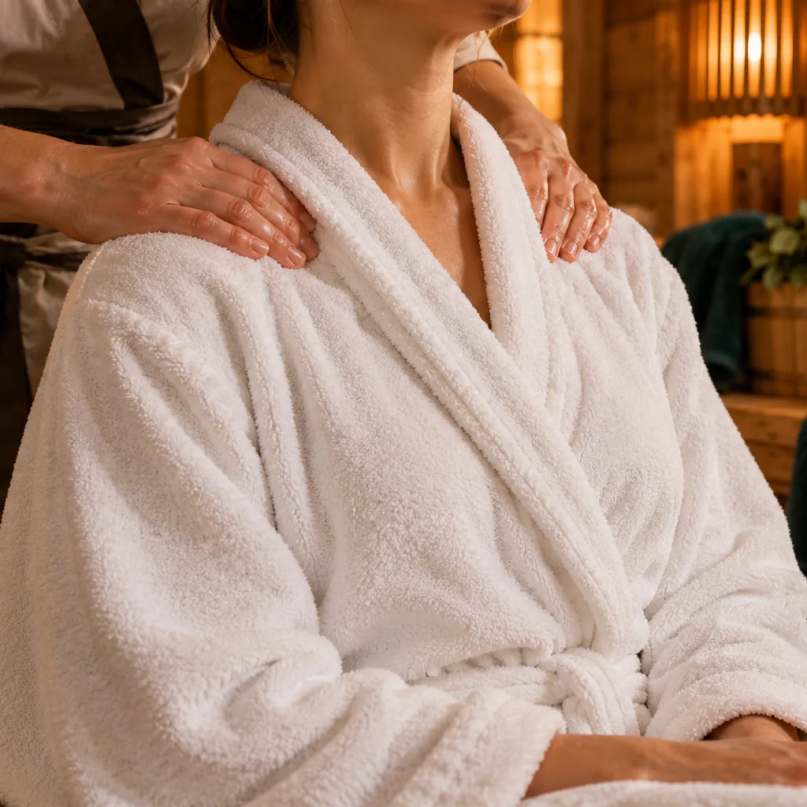

02 / МАССАЖ И БАННЫЕ ПРОЦЕДУРЫ
Тепло.
Пауза. Уход.
Расслабляющий массаж после пара, банная мойка или уход с солью и медом. Выберите, что хочется обсудить с пармастером.
Смотреть процедурыСОБЕРИТЕ СВОЮ ПРОГРАММУ
Что добавить к парению
Отметьте интересные варианты. Доступность процедур и состав средств уточним вместе с площадкой.